Ignition Coil
1949-1977 Kem TV84 Point Set Ford Ranch Wagon Custom Mercury Comet Ford Fairlane
TV84
Fits 1955-1970 Ford Fairlane · 1952-1973 Ford Ranch Wagon (2329 listed)
$16.99
View details76 parts from KEM, mostly ignition & tune-up, engine parts and electrical & sensors. Each listing shows the part number, condition and photos. Check fitment on the part page before you order.
76 parts
Online checkout through Square. Ships from Carbondale, PA, or pick up by confirmed appointment only. Fitment question? Message us.
TV84
Fits 1955-1970 Ford Fairlane · 1952-1973 Ford Ranch Wagon (2329 listed)
$16.99
View details
U12F
Fits 1950-1974 Ford Country Sedan · 1950-1974 Ford Country Squire (1751 listed)
$24.99
View details
EG1072
Fits 1956 Cadillac DeVille · 1956 Cadillac Eldorado (324 listed)
$14.99
View details
TV57X
Fits 1967-1974 Chevrolet Camaro · 1964-1975 Chevrolet Chevelle (2389 listed)
$12.99
View details
DS113
Fits 1979-1980 AMC AMX · 1973-1974 AMC Ambassador (1971 listed)
$21.99
View details
84U
Fits 1963-1974 Chevrolet C10 Pickup · 1964-1973 Chevrolet Chevelle (1719 listed)
$16.99
View details
219X
Fits 1966-1974 Ford Bronco · 1965-1976 Ford F-250 (1820 listed)
$12.99
View details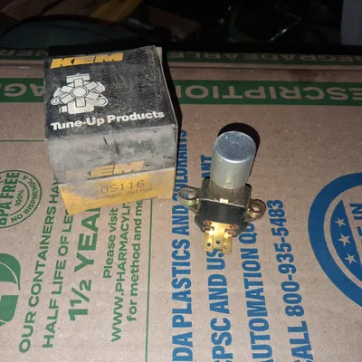
DS116
Fits 1967-1983 Chevrolet C10 Suburban · 1967-1983 Chevrolet C20 Suburban (3000 listed)
$22.99
View details
W282X
Fits 1986-1989 Honda Accord · 1973-1987 Honda Civic (312 listed)
$12.99
View details
W8
Fits 1971-1979 Volkswagen Beetle · 1975 Volvo 244 (742 listed)
$21.99
View details
SW95AX
Fits 1985-1990 Dodge D150 · 1985-1989 Lincoln Town Car (1304 listed)
$24.99
View details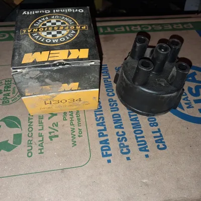
W3034
Fits 1973-1974 Honda Civic · 1981-1985 Mazda GLC (230 listed)
$12.99
View details
E303
Fits 1974-1983 Ford F-100 · 1975-1987 Ford F-150 (3000 listed)
$25.99
View details
W286X
Fits 1978-1979 Dodge Challenger · 1974-1991 Dodge Colt (644 listed)
$31.99
View details
W292X
Fits 1971-1979 Toyota Corolla · 1976-1980 Chevrolet LUV (453 listed)
$13.99
View details
W396X
Fits 1977-1987 Subaru Standard · 1971-1979 Toyota Corolla (161 listed)
$14.99
View details
W2037
Fits 1981-1998 Volkswagen Jetta · 1982-1988 Volkswagen Quantum (477 listed)
$12.99
View details
1441X
Fits 1978-1985 Buick Century · 1977-1985 Buick LeSabre (410 listed)
$19.99
View details
229X
Fits 1978-1983 Ford Fairmont · 1979-1986 Ford Mustang (537 listed)
$12.99
View details
W297X
Fits 1978-1986 Buick LeSabre · 1978-1986 Buick Regal (855 listed)
$27.91
View details
AR167
Fits 1979-1995 Buick Century · 1982-1995 Oldsmobile Cutlass Ciera (2677 listed)
$12.99
View details
AR178
Fits 1979-1995 Buick Century · 1984-1989 Buick Electra (2746 listed)
$15.99
View details
W296
Fits 1981-1984 Toyota Celica · 1981-1988 Toyota Pickup (179 listed)
$12.99
View details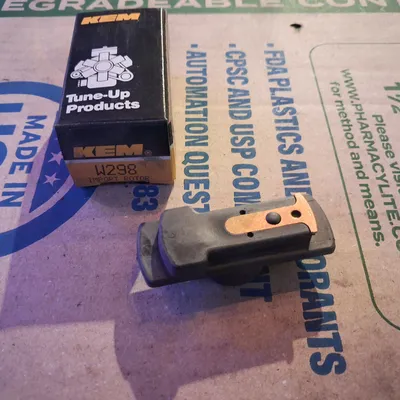
W298
Fits 1986-1987 Acura Integra · 1981-1989 Honda Accord (144 listed)
$12.99
View details
E220X
Fits 1980-1986 Chevrolet Camaro · 1981-1990 Chevrolet Caprice (1750 listed)
$25.00
View details
EG1092HD
Fits 1984-1985 Buick Century · 1984-1985 Buick Electra (1904 listed)
$15.99
View details
W299
Fits 1984-1986 Nissan 200SX · 1983-1985 Nissan 720 (27 listed)
$13.99
View details
1443X
Fits 1982-1984 Chevrolet Camaro · 1982-1984 Pontiac Firebird (569 listed)
$12.99
View details
E224X
Fits 1982-1984 Chevrolet Cavalier · 1982-1986 Oldsmobile Cutlass Ciera (713 listed)
$25.00
View details
E240
Fits 1982-1986 Chevrolet Celebrity · 1982-1993 Chevrolet S10 (1168 listed)
$19.99
View details
KVR544
Fits 1982-1983 Honda Accord · 1983-1987 Honda Prelude (12 listed)
$55.99
View details
W343
Fits 1984-1988 Nissan 200SX · 1983-1986 Nissan 720 (25 listed)
$12.99
View details
254X
Fits 1986 Ford Aerostar · 1984-1985 Ford Bronco II (41 listed)
$24.99
View details
257
Fits 1984-1996 Ford Bronco · 1983-1989 Ford E-350 Econoline (808 listed)
$12.99
View details
269
Fits 1984-1997 Ford F-150 · 1985-1996 Ford Ranger (1848 listed)
$12.99
View details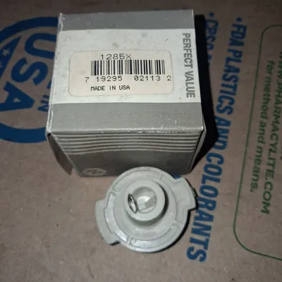
1285X
Fits 1985-1986 Buick Century · 1985-1986 Buick Skylark (99 listed)
$14.99
View details
W3030X
Fits 1986-1989 Mazda 323 · 1988-1990 Mercury Tracer (36 listed)
$16.99
View details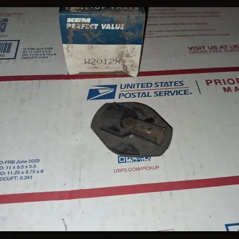
W2012X
Fits 1986-1989 Mazda 323 · 1987-1989 Mercury Tracer (47 listed)
$19.99
View details
E121
Fits 1988-1993 Dodge D150 · 1987-1993 Dodge Dakota (365 listed)
$19.99
View details
W2035X
Fits 1987-1991 Dodge Colt · 1989-1990 Dodge 2000 GTX (212 listed)
$12.99
View details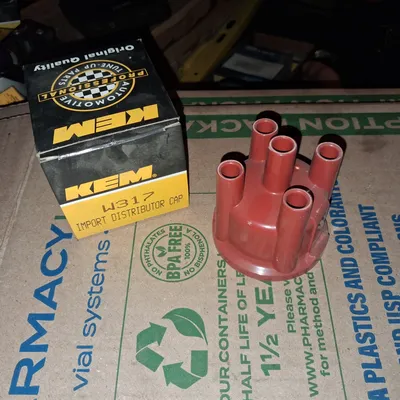
W317
Fits 1995-2002 Volkswagen Cabrio · 1990-1998 Volkswagen Golf (134 listed)
$30.99
View details
1289
Fits 1991-1995 Chevrolet Lumina APV · 1991-1994 Oldsmobile Silhouette (27 listed)
$19.99
View details
W3127
Fits 1993-1995 Toyota 4Runner · 1993-1995 Toyota Pickup (14 listed)
$19.99
View details
1459
Fits 1995-2005 Chevrolet Blazer · 1994-2003 GMC Jimmy (867 listed)
$23.99
View details
1831
Fits 1992-1994 Dodge B150 · 1992-1994 Dodge B250 (681 listed)
$17.67
View details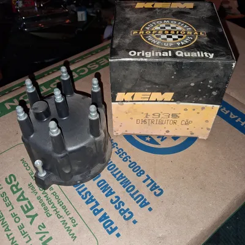
1935
Fits 1992-2003 Dodge Dakota · 1998-1999 Dodge Durango (252 listed)
$14.99
View details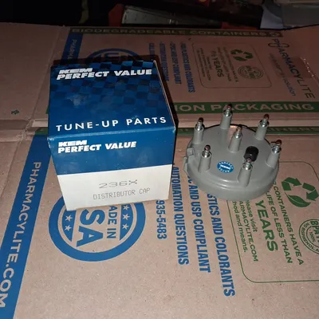
236X
Fits 1980-1985 Ford Bronco · 1977-1983 Ford F-100 (492 listed)
$19.99
View details
247X
Fits Chevrolet Monza · 1986-1987 Ford Aerostar (585 listed)
$19.99
View details
342G
Fits 1985-1986 Buick Century · 1985-1986 Buick Skylark (1941 listed)
$24.99
View details
342H
Fits 1986-1992 Buick LeSabre · 1984-1987 Buick Regal (235 listed)
$69.99
View details
AR174
Fits 1982-1989 Chevrolet Caprice · 1982-1988 Oldsmobile Cutlass Ciera (1481 listed)
$12.99
View details
AR175
Fits 1982-1988 Buick Century · 1983-1987 Chevrolet Camaro (596 listed)
$36.20
View details
AR180
Fits 1985-1989 Dodge Aries · 1985-1991 Dodge Caravan (662 listed)
$12.99
View details
AR181
Fits 1981-1991 Ford Bronco · 1980-1984 Ford E-150 Econoline (983 listed)
$12.99
View details
AR218
Fits 1986-1991 Chrysler Town & Country · 1987 Dodge Diplomat (124 listed)
$19.99
View details
AR228
Fits 1987-1992 Chevrolet Beretta · 1987-1992 Chevrolet Corsica (641 listed)
$17.98
View details
AR243
Fits 1982-2017 Buick Regal · 1980-1995 Cadillac Eldorado (3000 listed)
$12.99
View details
AR251
Fits 1986-1989 Buick Electra · 1986-1993 Buick LeSabre (3000 listed)
$14.99
View details
DS118
Fits 1978-1985 Buick LeSabre · 1978-1987 Buick Regal (3000 listed)
$28.46
View details
E118
Fits 1988-1992 Chrysler Dynasty · 1986 Chrysler Laser (1024 listed)
$51.43
View details
EG1091HD
Fits 1971-1985 Buick LeSabre · 1973-1985 Buick Regal (2997 listed)
$16.99
View details
KVR202B
Fits 1966-1989 Ford Bronco · 1975-1992 Ford F-150 (2855 listed)
$29.99
View details
KVR202BX
Fits 1966-1989 Ford Bronco · 1985-1995 Ford Cougar (3000 listed)
$34.99
View details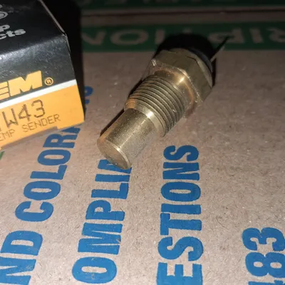
TW43
Fits 1980-1982 AMC Concord (28 listed)
$14.99
View details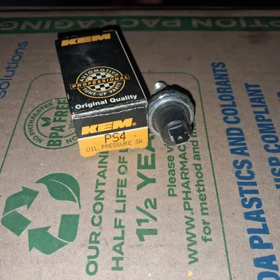
PS4
Fits 1973-1975 Buick Apollo · 1973 Buick Centurion (2071 listed)
$17.99
View details
PS90
Fits 1966-1988 Ford Bronco · 1960-1989 Ford F-250 (1356 listed)
$34.99
View details
U12GX
Fits 1978-1980 AMC AMX · 1978-1983 AMC Concord (570 listed)
$24.99
View details
UL7-16
Fits 1987-1991 Ford Bronco · 1987-1991 Ford F-150 (451 listed)
$29.99
View details
W2054X
Fits 1989-1992 Chevrolet Sprint (22 listed)
$12.99
View details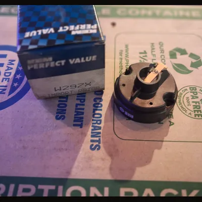
W297X
Fits 1980 Dodge Colt · 1987-1989 Chrysler Conquest (229 listed)
$14.36
View details
W3022
Fits 1987-1989 Isuzu I-Mark (7 listed)
$12.99
View details
W3058
Fits 1989-1990 Nissan 240SX · 1990-1994 Nissan D21 (40 listed)
$14.79
View details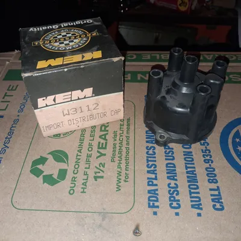
W3112
Fits 1986-1995 Suzuki Samurai · 1989 Suzuki Sidekick (20 listed)
$26.99
View details
W363
Fits 1985-1988 Chevrolet Nova · 1985-1988 Toyota Corolla (72 listed)
$21.45
View details
W393X
Fits 1989-1991 Hyundai Sonata · 1984-1990 Plymouth Colt (115 listed)
$19.67
View details
W399X
Fits 1981-1983 Toyota Celica · 1981-1982 Toyota Corona (37 listed)
$12.99
View details